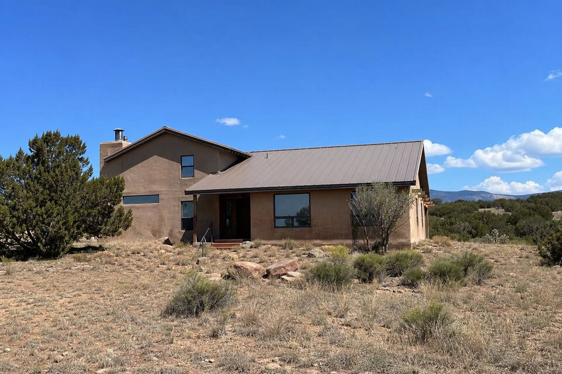

Stucco Work in Eldorado, NM
Eldorado’s frame-and-stucco homes went up together — which means their finish coats age together. Whole streets here are reaching the patch-or-recoat season in the same few years. Cracks, parapets, color, or a full project — call (505) 416-4951 or send the form; one plain sentence about the wall is enough.

A subdivision ages in unison
Eldorado was built out largely in the 1970s through 1990s, frame construction wearing cement and early synthetic finishes — and stucco skins from one era reach their tired season on one schedule. The local pattern is unmistakable: map-cracking and fade arriving street-wide, patch-quilt walls where repairs accumulated, and the color-coat-versus-keep-patching math coming up at kitchen tables all over the subdivision. When your neighbors start recoating, it is the shared birthday talking; the visit shows your own wall’s honest position on that curve.
Two local notes ride along: Eldorado’s covenants keep exteriors in the earth-tone family, so color choices get sampled with that in mind, and the open, treeless exposure out here gives south and west walls the full UV treatment — they fail first and deserve the first look.
Services available in Eldorado
The full lineup runs here as it does across the area: repair, re-stucco and color coats, new installation, and parapet and canale work — with the material guide deciding what belongs on which wall and the cost guide covering what moves the number.
Wall on your mind in Eldorado?
Send the form with your area and what you are seeing. The look-at-it visit does the diagnosing; the itemized quote follows.
Questions people ask
Half my street is recoating. Do I need to?
Maybe — same-era finishes age together, but lots differ. The visit sounds your actual walls and shows the patch-versus-color-coat math for your house, not the street's.
Do Eldorado covenants restrict stucco colors?
Exteriors stay in the earth-tone family — color selections get made with the covenants in view, and there is more range inside that family than most owners expect.
Why do my south walls look ten years older than the north ones?
Open-exposure UV at elevation — Eldorado's treeless lots give sun-facing walls a double dose. Recoats can be staged wall-by-wall when budget says so, worst faces first.